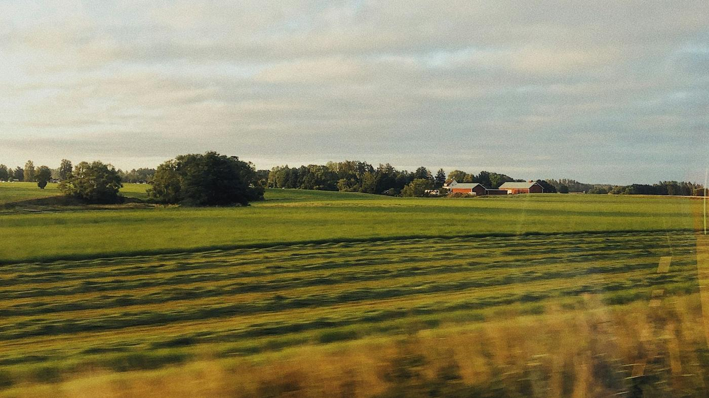

Stugor vid sjön Lommen, med kanoten vid bryggan
Elva stugor i tallskogen norr om Torsby. Välj datum och se vilka som är lediga.
Fyra sorters stugor
Alla har kök, dusch, vedkamin och utsikt mot vattnet. Ingen ligger mer än 60 meter från sjön.
-
Populär
Sjöstugan
från 1 450 kr per natt
-

Bryggstugan
från 1 050 kr per natt
-

Gårdsstugan
från 1 750 kr per natt
-
 Egen bastu
Egen bastuTallbacken
från 2 450 kr per natt
Allt börjar vid bryggan
Det mesta ingår i hyran. Kanot och bastu lägger du till när du bokar.
- Kanot och sup450 kr för hela vistelsen
- Vedeldad bastuVid sjön, 350 kr per kväll
- VandringTre märkta leder, 3–14 km
- FiskeGädda och abborre, kort i receptionen
- Svamp och bärKantareller från augusti
- SkidspårPreparerade december–mars
Tyst, mörkt och nära vattnet
Vi är en familj som driver stugbyn sedan 1998. Stugorna ligger utspridda, så du hör sjön och inte grannen.
- Vedkamin och ved som räcker hela vistelsen
- Wifi i alla stugor, om du ändå behöver det
- Parkering vid varje stuga och laddstolpe vid receptionen
- Hund välkommen i Gårdsstugan och Tallbacken
Gäster som kommer tillbaka
”Vi paddlade varje morgon och badade bastu varje kväll. Barnen pratar fortfarande om bävern vid udden.”
Exempel: familjen Lindqvist, Göteborg ”Tallbacken rymde hela gänget på åtta. Bastun i stugan var värd varenda krona.”
Exempel: Johan, Karlstad ”Helt tyst och mörkt på kvällarna. Ta med egna lakan om du vill spara lite.”
Exempel: Mira, Oslo
Omdömena är exempel i ett designkoncept.
Hitta hit
- AdressLomviksvägen 40, 685 92 Torsby3 timmar från Göteborg, 1 timme och 20 minuter från Karlstad.
- Telefon010-000 00 00Receptionen svarar 09.00–18.00 alla dagar.
- E-posthej@lomviken.exampleSvar inom ett dygn.
Vanliga frågor
När kan jag checka in och ut?
Incheckning från 15.00 och utcheckning senast 11.00. Kommer du sent ligger nyckeln i ett kodskåp vid receptionen.
Ingår sänglinne och städning?
Nej, men du kan lägga till båda när du bokar. Sänglinne och handdukar kostar 150 kr per person och slutstädning 795 kr.
Får jag ta med hund?
Ja, i Gårdsstugan och Tallbacken. Det kostar 200 kr per vistelse. Övriga stugor är fria från djur för gäster med allergi.
Hur avbokar jag?
Avboka gratis fram till 30 dagar före ankomst via länken i bekräftelsen. Senare än så återbetalar vi hälften.
Kommer man hit utan bil?
Bussen från Torsby stannar vid Lomviks vägskäl, 800 meter härifrån. Säg till i förväg så hämtar vi dig och packningen.